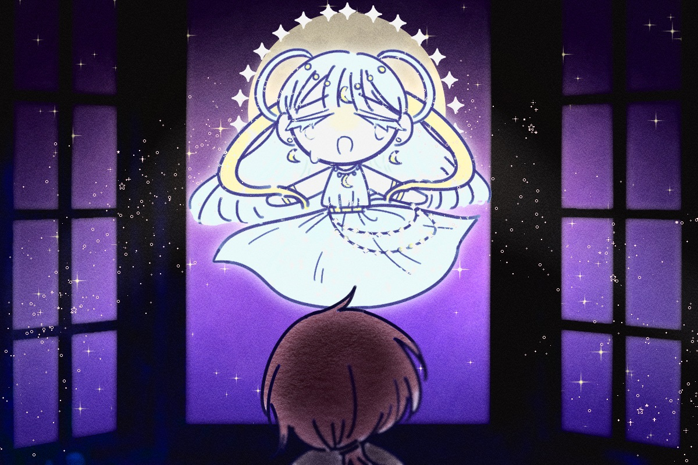
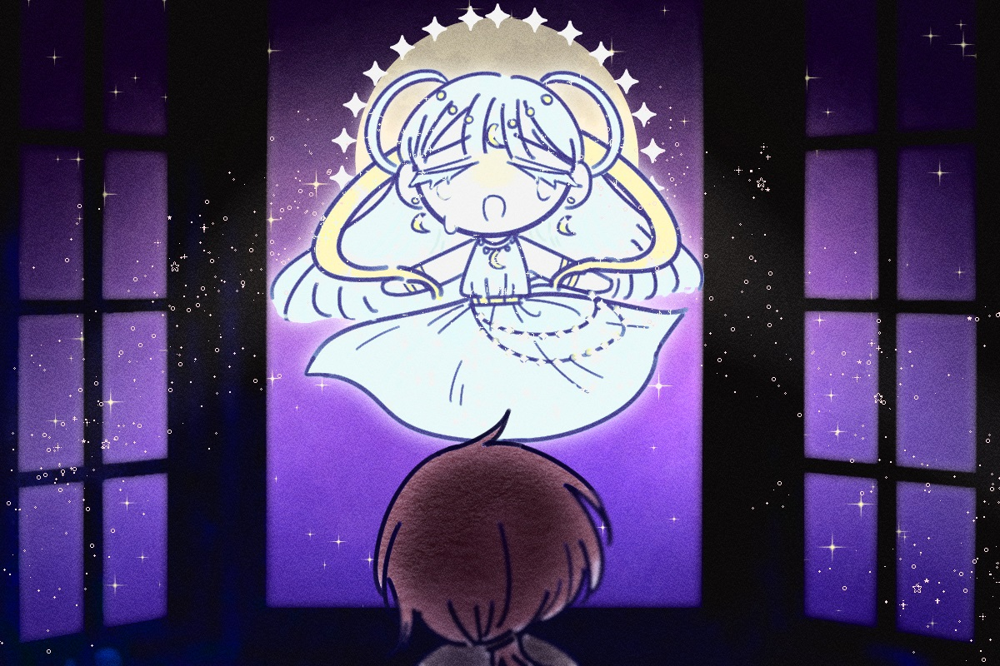

어느 날, 여느때와 다름없이 행복 없는 잠이 들지 못한 채
뒤척이며 울고 있었습니다.
그때 창문 결로 어떤 목소리가 달빛처럼 쏟아지는 게 느껴졌습니다.
그건 귀가 아니라 마음으로 들리는 소리였죠.
눈물을 거두고 다시 웃으며 살아가 줘. 부탁이야.”
“애너벨이 저에게는 달이었고, 해였으며, 세상이었습니다.
달님. 지금 저에게 달빛이 무슨 의미가 있을까요?”
아니면 그 아이를 구하는 수 밖에 없겠구나.
좋아. 내가 애너벨을 구할 수 있는 방법을 알려줄게.”
나는 달님에게 그 방법을 여쭈고, 그에 달께서는 답해주셨습니다.
천사들이 애너벨의 영혼을 바다 밑의 악마들 옆에 위치한 감옥에 가두었지.
그러니 천사들에게 가 열쇠를 얻은 다음,
악마들에게서 애너벨을 구해내자.
언덕 위의 숲으로 가면 천사들의 나라로 가는 길이 있을테야.
이제 눈물을 멈추겠니?”
 
